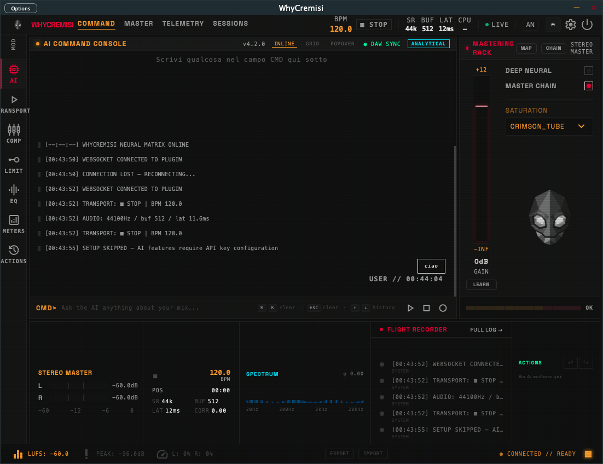

You hear it in your head. Now it can happen in your session. Describe the sound, compose full songs from nothing, fix phases, control every plugin — through natural language, from a single slot on your master channel. No menus. No manuals. Just say it.

How it works
DAW state broadcast at 33ms. AI response in milliseconds. Every plugin parameter written back in real time.
What you can do
There are no supported commands. Just describe what you want — in the language of music, emotion, and sound.
// BotFace
BotFace is the mascot that thinks, reacts, and feels with you during the session. When it's processing, you see it think. When something goes wrong, it shows concern. It's not decorative — it's a presence.
Philosophy
Most audio software asks you to learn its language — menu structures, preset names, parameter ranges. WhyCremisi flips this. You speak in the language of music and emotion. The software figures out the rest.
You shouldn't need to know that "filter cutoff" is parameter index 0047 in Serum. You should be able to say "make it darker" and have it happen.
Every parameter touch, every AI decision, every session. Not just this session — every session. It knows your history and learns your taste.
It thinks, replies, explains its reasoning, makes suggestions, pushes back when something doesn't make sense. It has a face that shows you how it feels.
Not an external app, not a chatbot tab. It lives inside your DAW, on the master channel, watching and listening to everything in the session.
A complete AI agent with every modern tool — from inside a single VST3 slot on your master channel. This shouldn't be possible.
Under the hood
JUCE Timer at ~30fps pushes transport, meter L/R/peak to every connected React client. Always live, never polling.
Append-only events.jsonl with ms timestamps. Cross-session memory.json persists AI knowledge between sessions.
DAW → OSC UDP :9000 → WebSocket TCP :8080 → React. Typed event system, auto-reconnect, pending request map.
Ollama offline by default (llama3.2 @ localhost:11434). Groq, Gemini, Claude, OpenAI, OpenRouter — one config change.
C++ broadcasts ui.widget.create/update/remove. React renders interactive parameter widgets live as the conversation evolves.
One JUCE 7 codebase. Three build targets. 14 automated tests. macOS · Windows · Linux — developed and tested across all three platforms. Currently in Beta.
Compatible with everything
Reads VST3 parameter indices at runtime — any plugin, any release date, day zero.
// Memory
Append-only events.jsonl logs every parameter touch with millisecond timestamps. Cross-session memory.json carries your preferences, your taste, your history. Ask it what it did three sessions ago. It knows.
The more sessions you run, the more it knows you. That memory is yours — and it can't be replicated by starting over.
Most tools make you speak their language.
This one speaks yours.
WhyCremisi is for the producer who can hear what the track needs but can't get there fast enough. For the engineer who knows exactly which word describes the sound but not which plugin to open. For the composer who hears the chord progression in their head but resists the piano roll.
The more sessions you run with WhyCremisi, the more it knows your taste — your decisions, your sound, your history. That memory is yours. It compounds. It doesn't reset. And it can't be replicated by starting over.
The gap between what you imagine and what you produce — we're closing it, one session at a time.
Get started
Works offline with Ollama — no API key, no subscription, no cloud. Install JUCE 7, build, drop on the master channel. The bridge starts automatically.